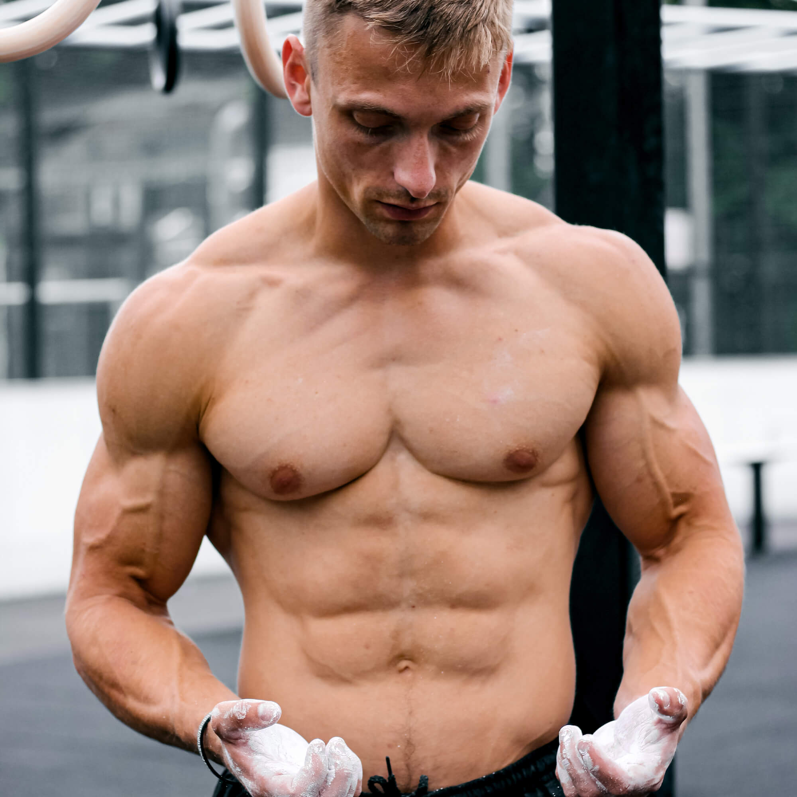
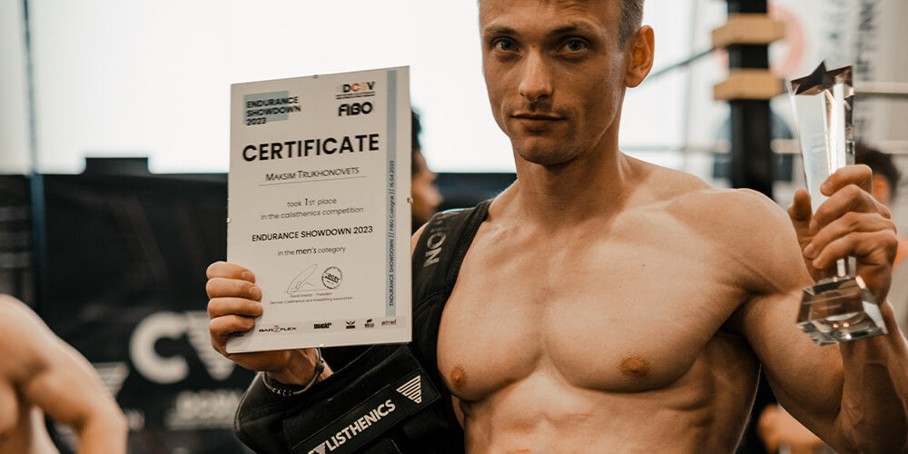
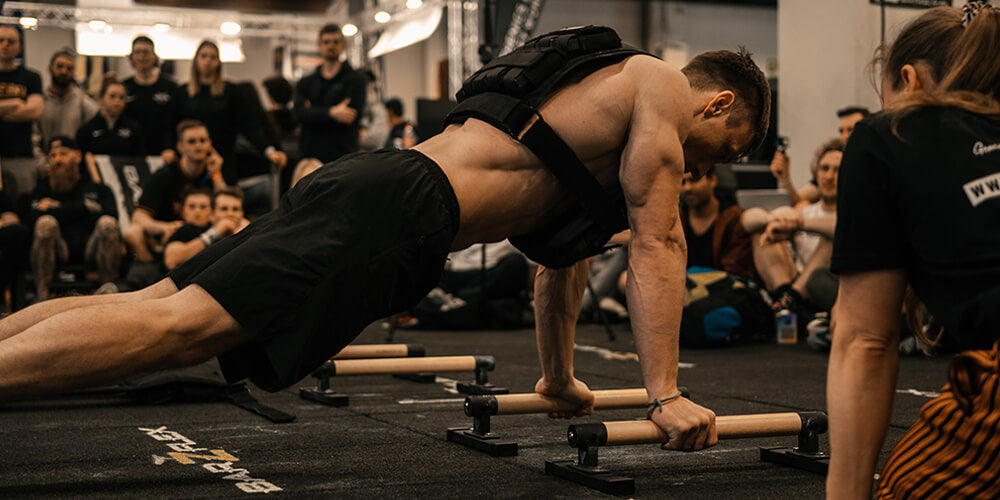

Maksim Trukhanavets, known as "Max True," is a Belarusian calisthenics athlete and software engineer whose passion for the sport has led to an impressive career. In this athlete portrait, we'll explore Max's journey, from his early days in football and martial arts to his incredible Guinness record achievement in calisthenics.
Born on July 12, 1989, in Belarus, Max True began his athletic journey with football and martial arts before discovering calisthenics in 2004. His diverse athletic background and dedication to mastering new disciplines have played a crucial role in shaping Max into the exceptional athlete he is today.
Maksim Trukhanavets
Max True
172 cm (5 feet 7.7 inches)
78kg(158.7 lbs)
Belarus
Belarusian
12/07/1989
33 years old(as of 2023)
Calisthenics Athlete, Software Engineer
41cm(16.1 inch)
2004
Football, Martial Arts
Max's calisthenics career is filled with numerous accomplishments, including:
His greatest success came after five years of preparation, when he broke the Guinness record for muscle-ups. This achievement, along with his other titles, has earned Max recognition as a formidable competitor in the calisthenics community.
Max trains for 1.5 - 2 hours per session, six to seven times a week. His top 3 pieces of equipment for his workouts are the Weight Vest, Parallettes, and Gymnastic Rings. He particularly enjoys using GORNATION's Premium Parallettes for his workouts. For beginners, Max advises consistency and patience in their training. When he struggles to find motivation, he pushes himself to do something easy and different, emphasizing the importance of maintaining a consistent routine.
Max follows a healthy, balanced diet, incorporating meat, vegetables, and dairy products. He believes that creatine can be beneficial but has only used it twice. For other supplements, Max remains skeptical about their significant effects on performance and recovery.
As a software engineer, Max sees calisthenics as a way to take a break from his work. He finds that the sport helps improve his overall life, allowing him to maintain a healthy balance between work and fitness. Max: "Calisthenics doesn't interfere with your life; it helps your life be better."
As a successful athlete and software engineer, Maksim "Max True" Trukhanavets serves as an inspiration to those looking to pursue their passion for calisthenics. His dedication to the sport and determination to continually improve demonstrate the transformative power of calisthenics.
Max's journey is a reminder that success in calisthenics and life comes from consistency, hard work, and the willingness to learn from our experiences. By integrating calisthenics into our daily lives, we can develop not only our physical strength but also our mental resilience and discipline.
As Max's career continues to evolve, we can expect to see even more incredible feats of strength and skill from this software engineer turned calisthenics champion. His message of perseverance and balance will undoubtedly inspire countless others to embrace the world of calisthenics and unlock their full potential.